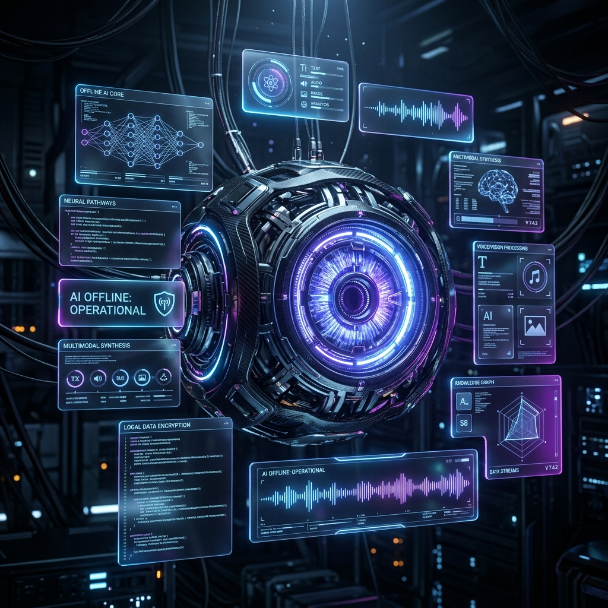
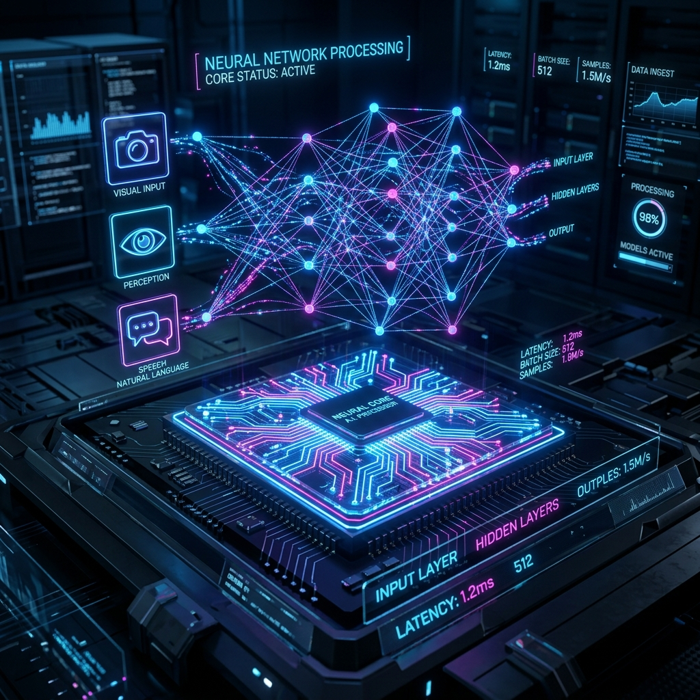
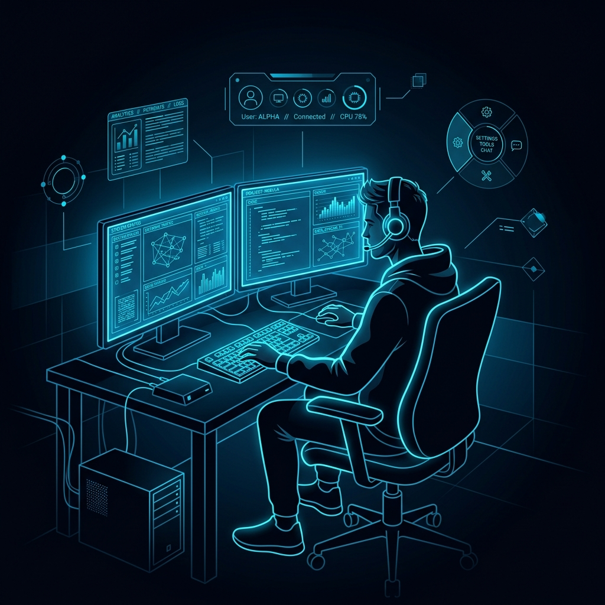

An Edge-native, locally-hosted AI intelligence designed for strict hardware constraints.

Use arrows to navigate →
A fully offline agentic system that transforms a constrained computer into a multimodal interactive hub without relying on cloud services.
Structured action planner with deterministic fallbacks. The active profile targets a local Ollama-hosted Gemma model, with optional CPU-local model loading paths retained in the codebase.
Continuous MediaPipe Tasks hand and face tracking with startup calibration, pinch-to-click, vertical scroll gestures, and head-pose-based yes/no detection logic.
Local wake-word listening and raw utterance capture are implemented through openWakeWord. The STT path is scaffolded for Faster-Whisper-style local transcription and still needs end-to-end validation on device.
Threaded action dispatch uses PyAutoGUI-backed desktop controls and app-aware shortcuts. A Piper voice layer exists as an optional local output path with text fallback when not configured.
Powering the "Brain" module with high-speed, local LLM execution:

Fusing vision, memory, and desktop context into a single cohesive stream.
The current visual route captures screenshots and can forward them to a local vision-capable backend when one is configured. It is not yet a fully validated live webcam VLM stack.
Routes between direct desktop actions, screenshot-assisted inference, and local OCR history lookup depending on what signal is available in the current interaction.
SELECT INPUT TRIGGER:

Gesture-first desktop control creates a practical base for accessibility-focused workstation interaction, with head-confirmation logic under active tuning.
Screenshot capture, OCR recall, and direct desktop actions support low-friction local assistance without depending on remote services.
The architecture is aimed at privacy-sensitive and air-gapped workflows by preferring local models, local automation, and local data sources.
Project O.S.C.A.R. shows how far a local-first assistant can go by combining calibrated gesture input, wake-word-triggered audio capture, screenshot context, OCR memory, and deterministic desktop control inside one offline-oriented runtime.